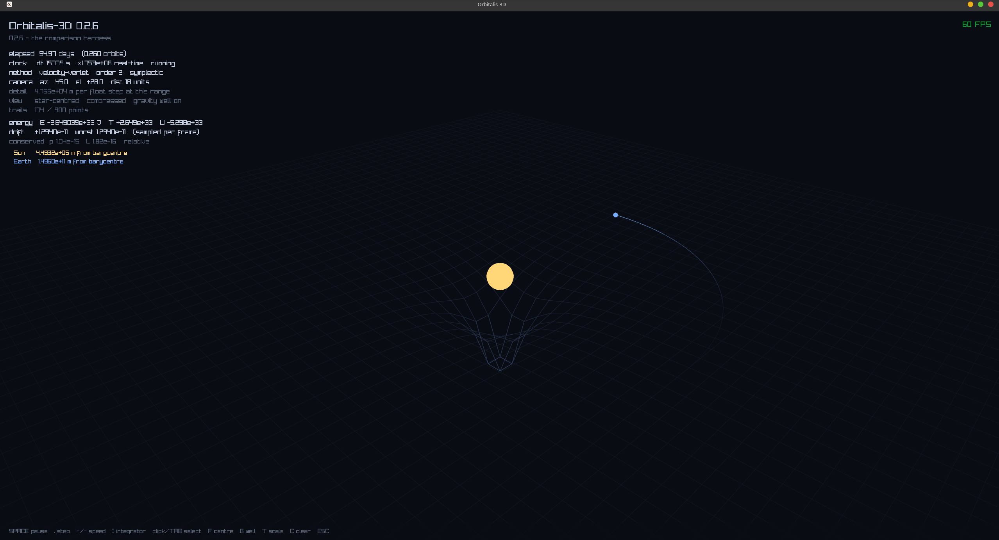

the result, first
five methods, one scenario, one table. Sun and Earth, circular, twenty orbits at 365 steps each:
method order sympl evaluations energy worst energy end bounded closure (m)
-----------------------------------------------------------------------------------------------
forward-euler 1 no 7300 5.8641e-01 +5.864e-01 NO 4.9660e+11
semi-implicit-euler 1 yes 7300 2.9635e-04 +2.158e-08 yes 3.9458e+09
velocity-verlet 2 yes 7301 2.1943e-08 +4.983e-14 yes 1.8567e+09
rk4 4 no 29200 5.2768e-09 -5.277e-09 NO 1.1222e+05
rkf45 5 no 43800 7.6037e-10 -7.604e-10 NO 1.0729e+04read it twice, because the two readings disagree.
by accuracy, RKF45 wins. its orbit closes to within 10.7 km after twenty years, against velocity Verlet's 1.86 million km. that is five orders of magnitude, and the ranking is RKF45, RK4, Verlet, semi-implicit, forward Euler, exactly in order of sophistication.
by whether the answer stays good, the ranking inverts at the top. the
two most accurate methods are the two that say NO in the bounded column.
their energy error is growing and has no mechanism to stop.
I measured where those two readings cross. running RK4 and velocity Verlet side by side and asking when RK4's accumulating error first exceeds Verlet's fixed envelope:
orbit 84.
before that RK4 is the better method. after it, forever, Verlet is. by orbit 400 RK4 is five times worse and still climbing while Verlet has not moved in the sixth significant figure.
that number is what this whole milestone was arguing toward, and it is why "which integrator should I use" has a table for an answer instead of a name.

the problem this milestone exists to solve
Newton hands you an acceleration, not a trajectory. that is a statement about the second derivative of position, and what you want is where things are at some future moment.
for two bodies there is a closed form: Kepler ellipses, jump straight to any time you like. for three or more, no such formula exists. not "nobody has found one yet" but proven not to exist in general, by Poincare in 1890. the three-body problem is chaotic.
so there is no shortcut. you have to walk. an integrator is the rule
for taking one step: given where everything is and how fast it is moving right now,
plus the forces, where is it dt from now.
the naive rule is what anyone writes first:
position += velocity * dt; // forward Euler
velocity += acceleration * dt;over the step the body genuinely curves, and this moves it along the tangent it started on. a tangent to a circle always lands outside the circle, so every step throws the body slightly too far out, the error always points the same way, and it accumulates. a circular orbit at 1 AU becomes 1.206 AU after a single year.
then swap two lines:
velocity += acceleration * dt; // semi-implicit Euler
position += velocity * dt; // <- now the NEW velocitysame instructions, same one force evaluation, same cost. the orbit now stays closed to four parts in a hundred thousand.
that result is genuinely startling the first time and it is the doorway into the real idea. nothing about accuracy changed. both are first order. what changed is that the error stopped having a preferred direction.
part one: two axes, not one
everything in this milestone follows from the fact that integrators vary along two nearly independent axes, and that "better" without saying which axis is meaningless.
order: how fast the error shrinks
order is the exponent. a method of order $p$ has a global error over a fixed interval that goes as $dt^p$, so halving the timestep divides the error by $2^p$.
measured, on a quarter orbit against the analytic circular solution:
| method | claimed order | measured ratio per halving |
|---|---|---|
| semi-implicit Euler | 1 | 1.9974, 1.9988 |
| velocity Verlet | 2 | 3.9998, 3.9999 |
| RK4 | 4 | 16.15, 16.10 |
| RKF45 | 5 | 32.72, 32.53 |
every one of those is a measurement, not a citation. this matters more than it sounds: all four methods still produce something that looks exactly like an orbit on screen when their coefficients are wrong. the convergence ratio is the only thing that notices.
one detail from measuring RK4 that I did not expect. at 2048 steps its quarter-orbit error is 1.6e-3 m and the measured ratio has fallen to 8.4, not 16. that is not a bug: the answer is now accurate enough that double-precision cancellation dominates the truncation error. measuring "order" down there measures the hardware. the step counts in the tests are chosen against that floor.
symplecticity: whether the error accumulates
symplecticity is the other axis and it is not about accuracy at all.
a symplectic integrator does not approximate your system. it exactly solves a nearby one. there is a modified Hamiltonian, the shadow Hamiltonian,
$$\tilde H = H + O(dt^2)$$that velocity Verlet conserves perfectly. so the energy you measure oscillates around the true value by an amount set by how far $\tilde H$ sits from $H$, and it stays there. it cannot wander off, because wandering off would mean failing to conserve $\tilde H$, and $\tilde H$ is conserved by construction.
a non-symplectic method has no such quantity. its error is free to accumulate in one direction, and it does.
the proof for velocity Verlet needs no error analysis at all. the update is:
$$ \begin{aligned} v(n+\tfrac12) &= v(n) + \tfrac12 a(n)\, dt \qquad \text{kick} \\ x(n+1) &= x(n) + v(n+\tfrac12)\, dt \qquad \text{drift} \\ a(n+1) &= f(x(n+1)) \\ v(n+1) &= v(n+\tfrac12) + \tfrac12 a(n+1)\, dt \qquad \text{kick} \end{aligned} $$a drift is what a body does with gravity switched off. a kick is what it does with motion switched off. each is an exact solution of half the problem and therefore individually symplectic, and a composition of symplectic maps is symplectic. that is the entire argument.
the symmetry of that composition, half-kick around a whole drift rather than two whole steps, buys the second order for free: the sequence reads the same in both directions, so the odd-order error terms cancel. which means you can test it directly. step 2000 steps forward, flip every velocity, step 2000 back, flip again:
velocity Verlet 0.00059 m from the start, on an orbit 1.5e11 m across
forward Euler 1.1e11 m, which is 0.74 AUVerlet's residual is accumulated floating-point rounding over 4000 steps, not method error.
the two axes are nearly independent
| method | order | symplectic | over one orbit | over a hundred million steps |
|---|---|---|---|---|
| forward Euler | 1 | no | bad | catastrophic |
| semi-implicit Euler | 1 | yes | bad | bounded |
| velocity Verlet | 2 | yes | good | bounded |
| RK4 | 4 | no | excellent | catastrophic, slowly |
| RKF45 | 5 | no | excellent | catastrophic, slowly |
both Eulers are order 1. one keeps an orbit closed forever and the other destroys it, at identical cost. that pairing is why both metadata fields sit on the interface rather than in a comment:
[[nodiscard]] virtual int order() const noexcept = 0;
[[nodiscard]] virtual bool is_symplectic() const noexcept = 0;order is a statement about a fixed interval as dt goes to zero. symplecticity is a statement about a fixed dt as the number of steps goes to infinity. they answer different questions and a project that only tracks one of them will confidently recommend the wrong method.
part two: the five methods
velocity Verlet, and the cache that pays for it
second order, symplectic, time-reversible, and still one force evaluation per step. that combination is why essentially every serious n-body code runs some version of it.
the trick is that $a(n+1)$ is evaluated at the positions the step ends on, which are the positions the next step begins on. so it gets kept and reused. without that, velocity Verlet costs two evaluations per step, which is what RK2 costs, and RK2 is a much worse deal.
the cache is the first piece of state any integrator in the project carries between steps, and it generated the whole hazard section of that step. it is valid only while nothing has moved the bodies behind the integrator's back. a body count change is detected for free. a teleport with the count unchanged is not, and the failure mode is not a crash: it is one step taken with forces from where the body used to be, which looks entirely plausible. measured cost of forgetting, after dragging Earth from 1 AU to 0.4 AU: 56 m/s of error against an orbital speed of 30,000. small enough to look like nothing, large enough to ruin the run.
velocities are deliberately not on the invalidation list, because Newtonian acceleration depends on positions and masses only. which is convenient, since negating every velocity is exactly what the time-reversibility test does.
there is a sibling method, DKD leapfrog, that is also second order, also symplectic, one evaluation per step, and needs no cache at all because its single evaluation happens at the midpoint. genuinely tempting. I went with kick-drift-kick anyway, for a reason that only shows up one step later: DKD's acceleration is at a half-step position nobody observes, and KDK's is at the state the step reports. the diagnostics want quantities at the state on screen, so the cache is not purely a cost. it is also the number I need next.
RK4, and Simpson's rule hiding in the weights
four evaluations per step for fourth order:
$$ \begin{aligned} x(n+1) &= x + \frac{dt}{6}(k_{1x} + 2k_{2x} + 2k_{3x} + k_{4x}) \\ v(n+1) &= v + \frac{dt}{6}(k_{1v} + 2k_{2v} + 2k_{3v} + k_{4v}) \end{aligned} $$the 1, 2, 2, 1 is Simpson's rule, and that is where the fourth order comes from: the two midpoint samples count double because the midpoint is where a smooth function is best represented.
expand the position line and it collapses into something familiar:
$$x(n+1) = x + v \, dt + \frac{dt^2}{6}(k_{1v} + k_{2v} + k_{3v})$$which is velocity Verlet's position update with a better averaged acceleration in place of the single $a(n)$. seeing that drop out made the extra three evaluations feel less like a different algorithm and more like paying for a better estimate of the same quantity.
three of RK4's four evaluations happen at trial positions the system never
actually occupies. that is why the force solver interface takes a span of
bodies rather than a System, a decision made four milestones earlier with
this method named in the comment. first time it was used.
and a consequence I had not considered until writing the test: the acceleration at the state the step ends on is never computed at all. Verlet's cache is exactly that acceleration, which is why the diagnostics can reuse it. RK4 leaves them nothing.
RKF45, two answers from six evaluations
the only method here that decides for itself how far to go. six stages produce two answers of different order from the same six evaluations, their difference estimates the error of the lower one, and that estimate drives the step size.
the roadmap entry for it, written months earlier, says "proper butcher tableau, do not typo it". most of the work went into making that enforceable rather than aspirational.
first, the tableau is checked against the Runge-Kutta order conditions directly, with no integration involved. every stage row sums to its own node, the matrix is strictly lower triangular so the method is explicit, and $\sum b c^k$ is correct through $k = p$ for both rows.
the checks that fail matter as much as the ones that pass. the fourth-order row must miss at $k = 4$ (it gives 83/416, not 1/5) and the fifth must miss at $k = 5$ (683/4160, not 1/6). a row satisfying one condition too many would be a different method wearing the wrong label, and the error estimate built from the difference of the two rows would be measuring essentially nothing.
that test also catches typos no amount of integration could. the fourth-order row never touches the integration path, since the error weights are stored pre-simplified rather than computed as $b_5 - b_4$. so a typo in $b_4$ was previously invisible.
second, the stage code is a loop over the table, not five hand-expanded expressions:
for (std::size_t s = 1; s < T::kStages; ++s) {
for (std::size_t i = 0; i < n; ++i) {
Vec3 position_offset{}, velocity_offset{};
for (std::size_t j = 0; j < s; ++j) {
position_offset += T::a[s][j] * kx_[j][i];
velocity_offset += T::a[s][j] * kv_[j][i];
}
trial_[i].position = bodies[i].position + h * position_offset;
kx_[s][i] = bodies[i].velocity + h * velocity_offset;
}
solver_->compute_accelerations(trial_, kv_[s]);
}
the first version had named scalars and hand-written stages. it worked, and mutation
testing killed every typo I threw at it, and I rewrote it anyway. transcription errors
do not live in the fractions, which a test now checks and which name the failing
condition. they live in writing kx_[4] where kx_[3] was
meant, inside an expression whose other nine indices are correct. that is invisible to a
reading. a loop over a table cannot make it, and the table is the same object the tests
verify.
testing an adaptive method's order is a different exercise
shrink the interval handed to step() and RKF45 does not take smaller
steps. it takes fewer of them, because the accuracy is pinned to the tolerance
rather than to the caller's dt. so the usual convergence test would measure the
controller and say nothing about the tableau.
the fix is to test the two separately. loosen the tolerance until nothing can ever be rejected, turning it into plain fixed-step Fehlberg, and the ratios come out 32.72 and 32.53. then test the controller on its own: quadrupling the outer steps moves the error by 1.35, nowhere near 32.
the exponent that falls out of local extrapolation
both answers come from the same six evaluations, so taking the better one costs one extra dot product. propagating the fifth-order answer is called local extrapolation, and it changes the tolerance scaling in a way I did not predict and had to derive from the measurement.
the controller sizes $h$ so the fourth-order error meets the tolerance, $C_4 h^5 = \text{tol}$, so $h \propto \text{tol}^{1/5}$. what actually gets propagated is fifth order with local error $C_5 h^6$, and there are $T/h$ of them:
$$\text{global} = \frac{T}{h} \, C_5 h^6 = T C_5 h^5 \propto \text{tol}^1$$linear. without extrapolation the same algebra gives $\text{tol}^{4/5}$. measured, scaling every tolerance by ten: ratios of 10.43 and 9.96. so the measured exponent is itself evidence that the fifth-order row is genuinely the one in use.
a circular orbit is a terrible test of an adaptive method
this one is obvious in hindsight and was not obvious while writing the first version of the test against the Sun-Earth scenario.
on a circle the timescale never changes, so the step size never changes, and RKF45 is just an expensive fixed-step method. measured: step size from 157791 s to 157791 s, spread exactly 1.0, zero rejections. that is now an asserted null result rather than an embarrassment.
so the project needed an orbit with a varying timescale. an ellipse from the vis-viva equation:
| eccentricity | step size range (s) | spread | evaluations |
|---|---|---|---|
| 0.0 | 157791 → 157791 | 1.0x | 1200 |
| 0.5 | 4001 → 157791 | 39x | 1434 |
| 0.9 | 926 → 157791 | 170x | 1944 |
at $e = 0.9$ the body moves nineteen times faster at perihelion than at aphelion and feels 361 times the acceleration, and the controller finds that without being told where perihelion is. covering that orbit with a fixed step accurate enough for perihelion means paying the perihelion price all the way round. RKF45 pays 62% more than the circular case in total and puts every bit of it where the trajectory is hard.
and it is still not symplectic, and adaptivity is the reason
this is the most counter-intuitive thing in the milestone. RKF45 is the most accurate method here and its energy error still walks in one direction: 4.18e-8 at five orbits, 4.18e-7 at fifty, ratio exactly 10. Verlet over the identical interval measures 1.0.
the reason has nothing to do with Fehlberg. $\tilde H$ depends on $dt$. change the step size and you change which quantity is being conserved, so the guarantee evaporates and the error is free to accumulate across the joins.
so an adaptive symplectic method is a contradiction, not a gap in the literature. making velocity Verlet adaptive would not give something both accurate and stable. it would give something that is neither.
part three: measuring, which turned out to be the hard part
you cannot see 1e-8
up to the halfway point of this milestone I was judging integrators by looking at them. an orbit that comes back to roughly where it started looks correct. "roughly" is doing an enormous amount of work in that sentence, and the eye cannot tell 1e-8 from 1e-4.
worse, the eye cannot tell a bounded error from a slowly growing one, and that distinction is the entire point.
the potential must be the one whose gradient is the force
the single most important design decision in the diagnostics.
potential_energy() is not a free function taking a softening parameter. it
is a pure virtual on the force solver:
[[nodiscard]] virtual double potential_energy(std::span<const Body> bodies) const = 0;because the potential has to be the one whose gradient is the force actually being integrated. a solver with Plummer softening $\varepsilon$ produces
$$a = \frac{G m \, d}{(|d|^2 + \varepsilon^2)^{3/2}}$$whose potential is $-Gm_i m_j / \sqrt{|d|^2 + \varepsilon^2}$, not the Newtonian $-Gm_i m_j / |d|$. pair the wrong one and the "energy drift" you measure changes when $\varepsilon$ changes and stays put when the integrator changes, which is exactly backwards from what the diagnostic is for.
putting it on the solver makes the mismatch impossible rather than documented. and it gets tested by numerical gradient: $dU/dx_i$ must equal $-m_i a_i$, every body, every axis, softening off and on. if the force and the potential ever stop describing the same physics, that fails, and every energy number downstream is meaningless until it passes again.
this was a note I had written to myself four milestones earlier and had already once failed to act on. the pattern that keeps working in this project is turning a note-to-self into a structure where the mistake cannot be expressed.
three conserved quantities, three different accusations
the milestone asked for energy. I built three, because they fail differently and that turns a diagnostic into a diagnosis:
- energy is the integrator's. it distinguishes methods and nothing else here does.
- linear momentum is the force solver's, via Newton's third law inside the pair loop. every integrator here updates velocity as a weighted sum of accelerations, and the mass-weighted sum of accelerations is exactly zero, so an integrator essentially cannot break it. a drift above roundoff accuses the pair loop, never the method.
- angular momentum is the one I had wrong.
part four: eight things I got wrong
1. angular momentum belongs to the force solver
I wrote in the header that angular momentum is conserved because gravity is a central force, so each pair's torques cancel, and therefore it is the solver's property like linear momentum is. then I wrote the obvious test.
forward Euler measured 0.552. it had lost 55% of the system's angular momentum over twenty orbits, while its linear momentum sat at 3.0e-15.
zero net torque is what makes the continuous system conserve $L$, and that really is the solver's doing. but whether a discrete step preserves it depends on the order the position and velocity updates happen in:
$$ \begin{aligned} \text{semi-implicit:} \quad L(n{+}1) &= \sum m \, r(n{+}1) \times v(n{+}1) \\ &= \sum m \, (r(n) + v(n{+}1)\, dt) \times v(n{+}1) \\ &= \sum m \, r(n) \times v(n{+}1) \qquad \text{the } v \times v \text{ term is identically zero} \\ &= L(n) + dt \cdot (\text{net torque}) = L(n) \qquad \text{exactly} \end{aligned} $$ $$ \begin{aligned} \text{forward Euler:} \quad L(n{+}1) &= \sum m \, (r + v\, dt) \times (v + a\, dt) \\ &= L(n) + dt \cdot (\text{torque}) + dt^2 \sum m \,(v \times a) \\ &= L(n) + 0 + dt^2 \sum m \, (v \times a) \end{aligned} $$that last term is not a torque and does not vanish. velocity Verlet is the same cancellation twice, once around each half kick, and is also exact.
so the final ordering is a third one, different again from accuracy and from boundedness:
| method | angular momentum drift, 20 orbits |
|---|---|
| velocity Verlet | 1.45e-15 (exact) |
| semi-implicit Euler | 1.64e-15 (exact) |
| RK4 | 2.64e-9 |
| forward Euler | 0.552 |
semi-implicit Euler is four orders of magnitude worse than Verlet on energy and holds angular momentum exactly. RK4 is the most accurate fixed-step method here and does not: angular momentum is a quadratic invariant, and a Runge-Kutta method preserves those only if its coefficients satisfy $b_i a_{ij} + b_j a_{ji} = b_i b_j$. the Gauss-Legendre methods do. classical RK4 does not.
accuracy and conservation are different questions. this is the sharpest demonstration of it in the project.
the ratio that turned out to be Kepler
reading those numbers I noticed RK4's angular momentum drift was almost exactly half its energy drift, at every sample point: at orbit 100, energy 2.638e-8 and $L$ 1.319e-8, ratio 1.99999.
not a coincidence. for a circular orbit $|E| \propto 1/a$ and $L \propto \sqrt{a}$, so
$$\frac{d|E|}{|E|} = -\frac{da}{a} \qquad \text{and} \qquad \frac{dL}{L} = \frac{1}{2}\frac{da}{a}$$and the ratio has to be exactly 2. RK4's drift is a clean secular decay of the semi-major axis and nothing else: the orbit stays circular and slowly shrinks.
that became a test, because it is a consistency check on the diagnostics as much as on the integrator. if energy and angular momentum disagreed about how far the orbit had moved, one of them would be computed wrong.
2. a metric with a ceiling
my first version of the forward Euler contrast asserted its energy error grew at least 5x from the early orbits to the late ones. it failed: 0.246 early against 0.586 late, a factor of 2.4.
that is not the method behaving well. $|E - E_0|/|E_0|$ cannot exceed 1 while the orbit is still bound, because forward Euler drives $E$ upward toward zero, so the ratio flattens against a ceiling that has nothing to do with how badly the trajectory is being wrecked. I was asking about a ceiling and calling it a measurement.
the fix was to ask about direction instead of size: sample the signed error once per orbit and count how often it decreased. for forward Euler over twenty orbits, never. 19 out of 19 rising.
3. divided by $E_0$ instead of $|E_0|$
the direction fix immediately reported forward Euler as decreasing every orbit. a bound orbit has $E_0 < 0$, so dividing the signed difference by $E_0$ flips the sign and an energy gain reads as a loss.
I had the method exactly backwards and the test passed a different assertion happily.
4. the same phase-creep trap, twice
having built the per-orbit direction count, I asserted Verlet's should be mixed, since a bounded oscillation should go down about as often as up. it came out 294 rising out of 299, which looks like a nearly monotonic drift.
it is not. the numerical orbit's period is not exactly the analytic one, so "every 365 steps" creeps slowly in phase, and the sampled value slides along a within-orbit oscillation rather than tracking a trend. I was measuring my sampling, not the method.
this is precisely the mistake I made three milestones earlier with an error-envelope test, and I walked into it again. the direction count is now asserted only for forward Euler, where the magnitude grows by more than the entire within-orbit variation and creep cannot fake it.
5. two tests that read perfectly and proved nothing
both found by mutation testing. I would not have found either by rereading.
the first: a test named "moving bodies behind the integrator's back
needs an explicit reset" called reset() on a freshly constructed
integrator, which has nothing to clear. it proved fresh equals fresh, and survived
reset() becoming a no-op.
the second: a test named "measure uses the barycentre for angular momentum" ran on the Sun-Earth scenario, whose barycentre is the origin, so the two choices are the same number there. it asserted the right idea against a case with no opinion about it. the rewrite needed a system both drifting and displaced several AU, so $R \times P$ is comparable to the internal rotation rather than a rounding on top of it.
there is a third of the same family in the harness: closure error measured absolutely rather than relative to the primary survived, because every built-in scenario has the primary near the origin and the two definitions agree to within the Sun's 4.5e5 m wobble. killing it needed a scenario translated as well as boosted, since a boost alone leaves them coinciding at $t = 0$.
the lesson all three share: pick a scenario that can tell the two answers apart. a test that cannot distinguish what it claims to test is worse than no test, because it reads like coverage.
6. "adding a method is one row" was already false
I had written, one step earlier, that the integrator registry meant adding a method was a single row. adding velocity Verlet needed two edits, because the name list was a second array written out by hand.
forgetting the second would have compiled fine and produced an integrator reachable by name but invisible to the viewer's cycle key and to the comparison harness. the list is now derived from the factory table, so the claim is actually true.
7. the default was an index, and the fallback was the worst method
the viewer picked its starting integrator by index. inserting a method into the registry would silently have changed which one it began with.
I switched to a lookup by name, and then noticed the lookup had a worse failure than the
one it fixed: if the name did not match, std::find returns the end and the
fallback lands on index 0, which is forward Euler, the one method in
the project that is deliberately bad. silently defaulting to the worst available option
is the kind of thing that looks like a physics bug for a week.
so the name moved into core next to the registry, with a test asserting it resolves and that whatever it names is symplectic and at least second order.
8. symplectic is not a promise that holds at any timestep
the last one, and the one that nearly went out in a published table.
on an $e = 0.9$ comet at 365 steps per orbit, the harness printed:
semi-implicit-euler worst 2.0558e+00 bounded yes
velocity-verlet worst 5.5740e-01 bounded NOvelocity Verlet reported not bounded. semi-implicit reported bounded while carrying a 206% energy error. read literally, the table says the symplectic guarantee fails and the worse method is the safe one.
neither statement means anything. nothing fixed-step resolves an $e = 0.9$ perihelion at that step. the shadow Hamiltonian $\tilde H = H + O(dt^2)$ is an asymptotic construction and at a step that coarse it simply does not exist. the numbers are noise and the verdict was reading noise.
so the summary now declines to judge a run that never resolved the orbit, and getting that right took two attempts. suppressing any row over 1% error was too blunt: it silenced forward Euler on the circular table, where 59% error is not an artefact, it is the method being bad, and "spirals out" is exactly the verdict worth printing.
resolution is judged at the level of the table instead, using the best symplectic row as the yardstick. if that method cannot hold its energy, the step is too coarse for the scenario and no fixed-step row means anything. if it can, a bad row is simply a bad method.
symplectic is the principled filter rather than a convenient one: an adaptive method cannot be symplectic, so every symplectic row is necessarily fixed-step, which is exactly the population whose accuracy the caller's timestep controls.
the shape they share
seven of those eight are not bugs in the physics. they are bugs in the measurement, and they divide into two families.
the first family is a number without a scale. dividing by $E_0$ instead of $|E_0|$. asserting an absolute momentum threshold on a solar-system quantity, in the very file arguing against that. using a metric with a ceiling and reading the ceiling. every one of them is a quantity that is meaningless until you say what it is measured against.
the second family is a test that cannot see what it claims to test. the vacuous reset, the barycentre with no opinion, the closure in a frame where both definitions coincide, the phase creep where the sampling and the signal share a period. every one reads like coverage and provides none.
the tool that found the second family, three times, is mutation testing. take the code, break it on purpose in a plausible way, and check the suite goes red. across this milestone that was 69 mutations across five runs: 67 killed, 2 equivalent. every single one of the numerical mutations still produced something that looked exactly like an orbit on screen. most of them were still working integrators, just wearing the wrong order.
where 0.3.0 landed
five integrators, swappable at runtime through a pointer that never learns which one it holds. live conservation diagnostics in the viewer. a comparison harness that walks the registry and prints the table at the top of this piece.
the numbers worth keeping:
| forward Euler | semi-implicit | Verlet | RK4 | RKF45 | |
|---|---|---|---|---|---|
| error ratio per halved step | — | 1.997 | 3.9998 | 16.15 | 32.72 |
| evaluations/step | 1 | 1 | 1 | 4 | 6 per attempt |
| energy, 20 orbits | 0.586 | 2.96e-4 | 2.19e-8 | 5.28e-9 | 7.60e-10 |
| energy bounded | no | yes | yes | no | no |
| angular momentum | 0.552 | exact | exact | 2.64e-9 | 3.80e-10 |
| closure, 20 orbits | 4.97e11 m | 3.95e9 m | 1.86e9 m | 1.12e5 m | 1.07e4 m |
and the one-line answer the whole thing was for:
RKF45 for a short arc or a close encounter. velocity Verlet for a million steps. forward Euler for nothing at all.
the trap is that the long-run question is the one that looks like it wants the more accurate method.
what is next
0.4.0, Barnes-Hut. the force solver stops being exact and becomes an approximation with a tunable error, which is what takes the cost from $O(n^2)$ to $O(n \log n)$ and makes tens of thousands of bodies possible.
everything built here becomes the instrument for measuring that. the conservation diagnostics already localise a fault: linear momentum accuses the pair loop, energy accuses the integrator. and angular momentum goes wrong precisely when a force stops pointing along the line joining two bodies.
which is exactly what a tree-code bug looks like.